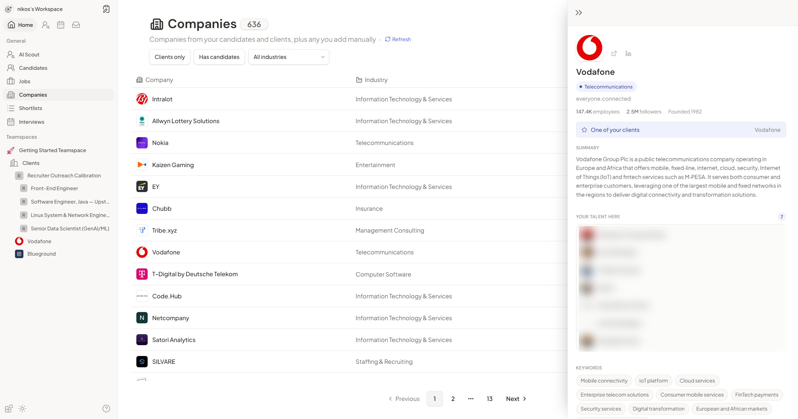
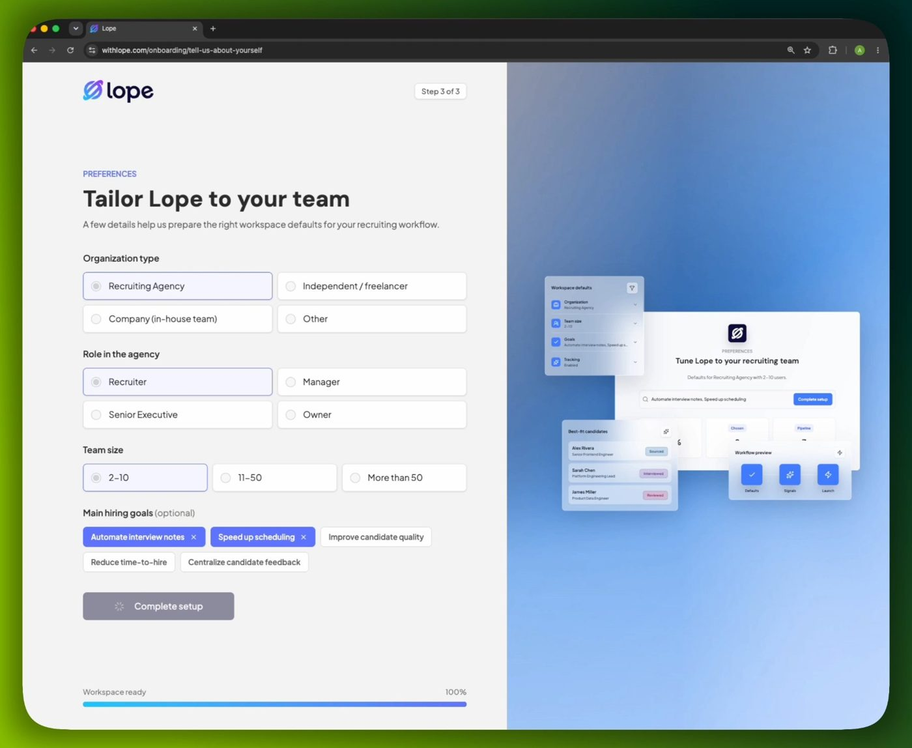
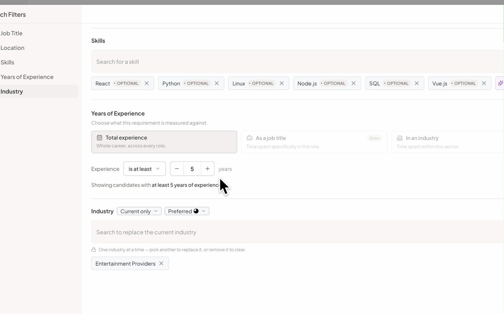
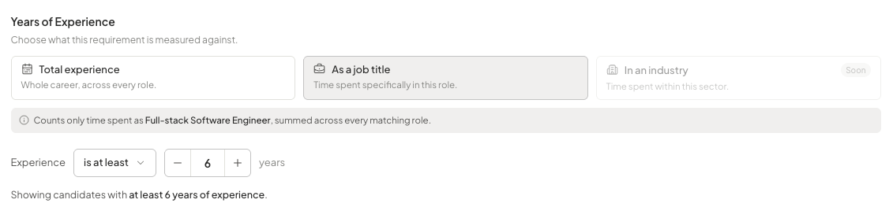

An AI-native recruitment CRM that turns a role brief into a ranked, explainable shortlist — built by a team of three engineers and run in production with real recruiting agencies.
Boutique technical recruitment agencies — two to twenty recruiters — work across LinkedIn, spreadsheets, an ATS and a notetaker. Two pains dominate: sourcing is slow and opaque, and the context a recruiter needs to defend a candidate is scattered across four tools.
AI sourcing tools that search better tend to return a bare match score. A recruiter can't hand a black-box number to a client. Lope's bet was explainability: every candidate's fit broken down criterion by criterion — title, skills, experience, location, industry — as evidence a recruiter can put in front of a hiring manager.
“The explainable sourcing-to-shortlist decision layer for European boutique technical recruitment agencies.”
North-star metric: shortlist acceptance rateOne multi-tenant platform covering the recruiting lifecycle — source → enrich → evaluate → interview → collaborate → track — organized as Workspace → Teamspace → Project → Job.
Natural-language role brief → ranked candidates from the internal database, an external talent database, or both, with a green/red per-criterion match breakdown on every result.
Conversational front door to AI Scout, built as a deterministic orchestrator: the LLM extracts and phrases, code owns every decision.
LinkedIn profiles, companies and schools enriched automatically through webhook-driven serverless functions; CV parsing via OCR → structured LLM extraction, including bulk ZIP import.
7-stage pipeline as table and drag-and-drop Kanban, AI shortlist evaluation against a versioned client brief, public share links for clients, Chrome extension for LinkedIn capture.
Google and Microsoft calendar sync, a meeting bot that records and diarizes, templated AI summaries, and an interview chat whose citations are verified server-side.
"Recruit-from" company pages showing which of your candidates work there now; nightly LinkedIn diffs that flag job changes and promotions.
A hosted Model Context Protocol server with 27 tools and OAuth 2.1 capability-scoped grants — the whole CRM usable from Claude, ChatGPT, Cursor and Gemini.
Deterministic, market-derived salary bands; the LLM explains where a profile sits in the band but is never allowed to produce a number.
Recorded on the live product and sent to our customers' Slack community as onboarding material. Nothing staged — this is what recruiters used.
A plain-language brief becomes structured filters with synonym-expanded job titles, external sourcing pulls new profiles and enriches their companies and schools live, and every result arrives with a per-criterion explanation.
A conversational agent that asks the right follow-up questions and hands a well-formed brief to AI Scout.
Transcript, templated summary, and a chat whose every answer cites the exact transcript moment.
OAuth consent with capability-scoped permissions, then the CRM answering questions from inside Claude.
Published on the Chrome Web Store: spots candidates already in your database and adds new ones in one click.




Each candidate is embedded with JobBERT into five collections — title, skills, experience, location, industry. Each criterion is searched separately and fused by rank aggregation, so every result carries its own sub-scores: that's what makes it explainable.
Guided Search, the industry resolver and salary explanations share one pattern: code owns decisions, the model handles fuzzy language, and every output snaps back to a validated value. The rewrite replaced a 961-line state machine and an agent loop.
The industry resolver runs exact → fuzzy (Postgres trigram) → LLM choosing only from the stored taxonomy. Salary numbers are computed, never generated. Interview-chat citations are checked server-side before they render.
Row-level security on every table, with public/private scope enforced through a chain of access functions from teamspace to interview; vectors isolated per environment in separate Milvus databases.
Nano models classify, mini models extract, larger models reason, a dedicated model does OCR; content-hash caching means identical inputs are never billed twice.
Durable, lease-based background jobs instead of long serverless calls; immutable commit-addressed releases on the VM behind a Cloudflare Tunnel with no public ports on internal services.
Lope launched publicly in March 2026. Recruiters found it through LinkedIn, word of mouth, Slack and Discord communities, Google, Reddit, a newsletter, a conference — and three through AI assistants (ChatGPT and Perplexity).
Connecting a work calendar to a brand-new tool is a high-trust step; 13 recruiters did it. From July 2026 a Greek technical recruitment agency ran three recruiters on Lope as a design partner: about 950 of their interviews flowed through it, they ran 36 AI Scout searches, sourced ~450 candidates externally, and one recruiter used it across 75 days.
We supported customers through a dedicated Slack community with feature-request, feedback and bug channels, shipped 5 release notes in 18 days in July 2026 in our customers' language, and produced 11 onboarding videos.
| Customer (anonymized) | Active days | Span | Searches | Sourced | Shortlisted | Interviews |
|---|---|---|---|---|---|---|
| Agency A · recruiter 1 | 18 | 75 d | 10 | 50 | — | 297 |
| Agency A · recruiter 2 | 15 | 27 d | 3 | 36 | — | 654 |
| Agency A · recruiter 3 | 6 | 49 d | 23 | 369 | 56 | — |
| Independent recruiter | 4 | 30 d | 9 | 304 | — | — |
| Agency B | 3 | 105 d | 5 | 40 | 7 | 13 |
| Agency C | 3 | 34 d | 1 | 19 | — | 25 |
Six months of real workload, read straight from the production database — not a staging demo.
| Pipeline | Volume | Success | Latency |
|---|---|---|---|
| LinkedIn profile enrichment | 2,983 profiles · 558 jobs | 98.7% | p50 51 s · p90 124 s per job |
| Company enrichment | 3,758 companies | 99.5% | — |
| School enrichment | 556 schools | 91.2% | — |
| AI Scout runs, all modes | 243 runs | 95.9% | internal p50 ~11 s end-to-end |
| AI Scout, customers' internal & mixed runs | 24 runs | 100% | p50 11.2 s · p90 13.7 s |
| AI shortlist evaluation (LLM-as-judge) | 701 evaluations | 99.0% | — |
| Automated test suite | 1,308 tests · 165 files | 100% | 42 s full run |
Six realistic recruiter queries hit the search engine directly, five times per scope. Standard searches — backend, frontend, data science, DevOps — return in 3.1–3.6 s over a workspace-sized pool, with top matches scoring 0.86–0.98. Industry-filtered and full-career-history searches are the heavy paths at 11–14 s.
The honest limit: on one CPU-only VM the engine handles concurrent requests one at a time (0.28 req/s at 5 in parallel). Fine for pilot load; GPU inference or a query-embedding cache was the next scaling step.
A controlled experiment against the external talent API proved the "current + past role" logic correct (11 ⊂ 15 results, none dropped) and traced an apparent bug to LLM non-determinism in synonym generation — so synonyms were pinned. The same run measured an industry-filter leak (7 of 11 off-target) and validated the fix (4 of 4 on-target).
When an indexing endpoint returned success without writing vectors, we wrote an indexing contract, made responses per-candidate honest and added a rank-time backstop. When a recall bug hid candidates in unprobed vector clusters, we pinned the search parameters — at a cost of about 1.6 ms per query.
First commit. Candidate table, auth, workspace model.
Meeting bot and Google Calendar push webhooks. RLS across the schema.
Enrichment pipeline, company scraping, CV parsing, Kanban, LinkedIn Chrome extension.
AI Scout and shortlists ship; search-engine repo starts (JobBERT + Milvus).
Vector search engine integrated into production.
Public launch — first external recruiters sign up.
Lope MCP server; move to a dedicated backbone VM.
External talent search, public share links, salary bands, guided onboarding.
Design-partner agency onboarded; Guided Search rewrite, Companies intelligence, interview collaboration. Busiest month: 253 commits.
Paused, with the product intact and documented.
Designed pre-revenue from measured vendor costs: $0.196 per external search at launch volume (falling to $0.04 at scale), $0.86 per interview hour, and about €189 / month of fixed infrastructure.
Every surface — sourcing, notetaking, CRM, pipeline — competes with a funded specialist. Our own strategy review concluded we should subtract and focus on explainable sourcing, the part that was genuinely hard to copy.
Event tracking lagged the product. Analytics alone said nobody reached the core workflow; the database showed active users hitting coverage limits. We wrote a reading guide so the mistake couldn't repeat.
The meeting bot produced a transcript 77% of the time it was switched on — but recruiters switched it on for only 13% of interviews, because auto-join defaulted off. A default problem, not a reliability one.
An apparent logic bug was regenerated synonyms. Any model output that shapes a search is now cached and pinned per search.
At shutdown we found a rescheduling loop that had created thousands of bot records for one customer's meetings without tripping an error alert. Volume anomalies deserve alerts too.